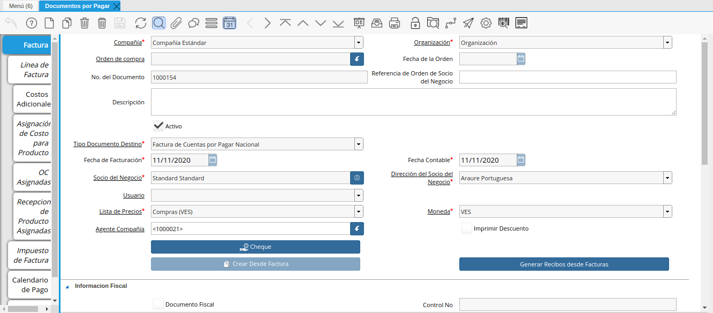
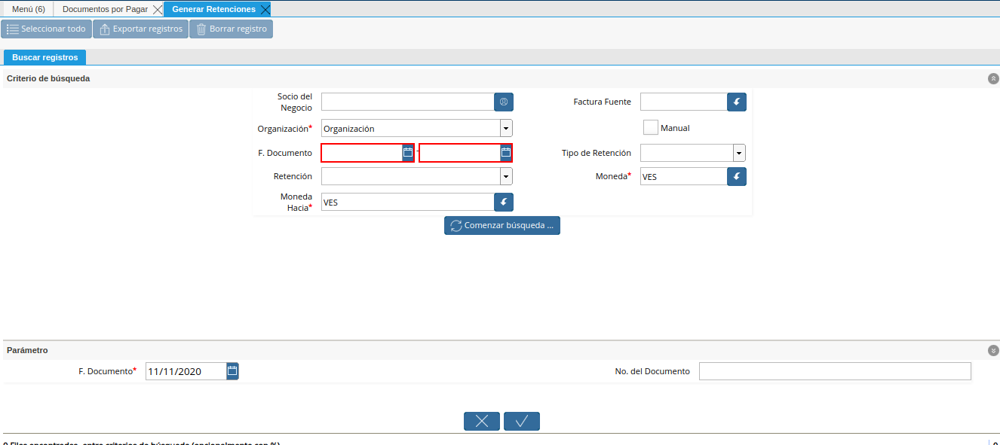
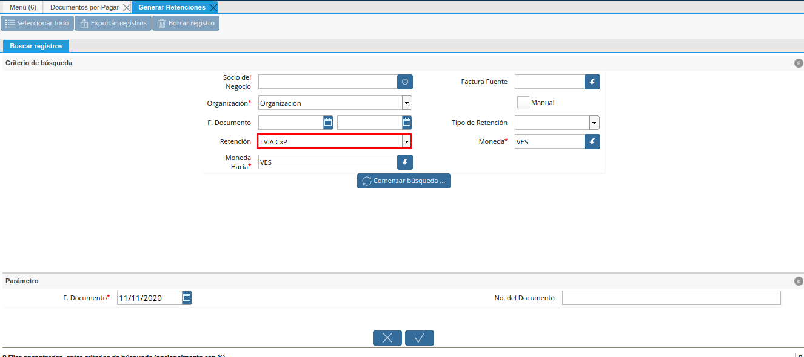
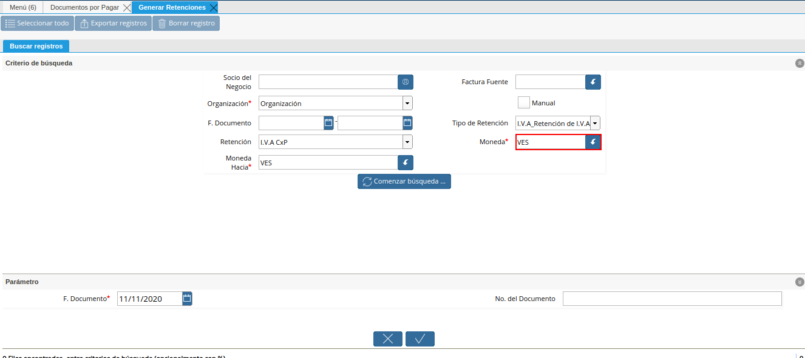

Configuración Esencial de la Retención de IVA
La configuración esencial de las retenciones en ADempiere, permite que sea ejecutada la estimación de la retención a un socio del negocio proveedor al completar el documento de cuentas por pagar en ADempiere, la misma consta de dos procesos explicados a continuación.
Configuración de la Tasa de Impuesto
La aplicación de retención de IVA en un documento de cuentas por pagar parte de la selección de IVA en el campo “Impuesto”, el mismo debe ser configurado desde la ventana “Tasa de Impuesto”, o acercando dicho campo en la línea de la factura. Para que se ejecute la estimación de la retención, es necesario configurar la tasa de impuesto.
Ubique en el menú de ADempiere la carpeta “Análisis de Desempeño”, luego seleccione la carpeta “Reglas Contables”, por último seleccione la ventana “Tasa de Impuesto”.
Imagen 1. Menú de ADempiere

Podrá apreciar la ventana “Tasa de Impuesto” con los diferentes registros de impuesto de IVA y sus diferentes porcentajes de retención.
Imagen 2. Ventana Tasa de Impuesto

Ubique el impuesto a aplicar al documento por pagar, para este ejemplo el impuesto es “IVA 16% (Ingreso)”.
Imagen 3. Registro de Impuesto de IVA

Tilde el checklist “Retención Aplicada”, para que ejecute la estimación de retención al completar el documento por pagar.
Imagen 4. Checklist Retención Aplicada

Seleccione el icono “Guardar” en la barra de herramientas de ADempiere.
Imagen 5. Icono Guardar

Warning
Este proceso debe ser realizado cada vez que se vaya a aplicar un impuesto de IVA diferente en cada documento por pagar.
Configuración del Socio de Negocio
ADempiere permite seleccionar por socio del negocio el porcentaje de IVA a aplicar en los documentos de compra/venta del mismo, a continuación se explica el procedimiento para seleccionar el IVA en un socio del negocio determinado.
Ubique en el menú de ADempiere la carpeta “Relación con Socios del Negocio”, luego seleccione la carpeta “Reglas de Socios del Negocio”, por último seleccione la ventana “Socio del Negocio”.
Imagen 6. Menú de ADempiere

Ubique el socio del negocio proveedor al cual se le va a configurar la retención de IVA, para este ejemplo el socio del negocio proveedor es “Standard Standard”.
Imagen 7. Socio del Negocio

En la ventana principal “Socio del Negocio”, verifique que en el campo “Tipo de Persona” se encuentre seleccionado el tipo de socio del negocio al que se le aplicará la retención de IVA, en este campo debe indicar si el socio es persona jurídica domiciliada, persona jurídica no constituída domiciliada, persona jurídica no domiciliada, persona natural no residente, o persona natural residente.
Imagen 8. Campo Tipo de Persona

Seleccione la pestaña “Proveedor” para configurar la retención de IVA a aplicar al socio del negocio.
Imagen 9. Pestaña Proveedor

Ubique en la parte inferior del documento los checklist para definir las retenciones a aplicar a un socio del negocio proveedor.
Imagen 10. Retenciones
Note
Al tildar el checklist en los campos de retenciones ubicados en la parte inferior del documento, significa para ADempiere que no se aplicará dicha retención seleccionada al socio del negocio.

Para realizar este ejemplo de la retención de IVA y observar el comportamiento de los checklist en ADempiere, se tildan los checklist referentes a retención de ISLR y municipal.
Imagen 11. Checklist Retenciones

Seleccione en el campo “Retención de IVA Aplicada”, el porcentaje de IVA a retener al socio del negocio proveedor, para este ejemplo el porcentaje a retener es cien por ciento (100%).
Imagen 12. Campo Retención de IVA Aplicada

Warning
Solo debe tildar la retención que no se aplicará al socio del negocio proveedor que esta configurando y guarde los cambios realizados en el socio del negocio con ayuda del icono “Guardar Cambios” de la barra de herramientas de ADempiere.
Ejecución de la Estimación de Retenciones
Ubique la factura ya realizada al socio del negocio, la misma debe estar en estado “Completo”, para este ejemplo se utiliza la factura número “1000154” del socio del negocio proveedor “Standard Standard”.

Imagen 13. Factura Aplicada al Socio del Negocio
En la barra de herramientas seleccione el icono “Visualiza Detalle” para apreciar donde es usado el documento, en este caso la factura.
Imagen 14. Icono Visualiza Detalle

Podrá apreciar el menú desplegado por el icono “Visualiza Detalle”, el mismo muestra los documentos donde es utilizada la factura.
Imagen 15. Menú del Icono Visualiza Detalle
La opción “Socio del Negocio” muestra el documento del socio del negocio utilizado en la factura número “1000154” seleccionada para el ejemplo, puede ser utilizada para corroborar que las retenciones aplicadas a la factura sean las mismas configuradas para el socio del negocio.
Imagen 16. Opción Socio del Negocio
La opción “Retención Generada” muestra el documento de retención aplicado a la factura número “1000154” seleccionada para el ejemplo.
Imagen 17. Opción Retención Generada
La opción “Log de Retención” muestra el log de la retención no aplicada a la factura número “1000154” seleccionada para el ejemplo.
Imagen 18. Opción Log de Retención


Warning
ADempiere le genera al usuario por medio del icono “Visualiza Detalle”, las alertas donde indica cuales fueron las retenciones aplicadas (Retención Generada) y cuales retenciones no fueron aplicadas (Log) según la configuración que tiene un socio del negocio determinado.
Generar Retención de IVA Fiscal
Ubique la carpeta “Manejo de Retenciones” en el menú de ADempiere, luego seleccione la ventana de busqueda inteligente “Generar Retenciones”.
Imagen 19. Menú de ADempiere

Podrá apreciar la ventana de busqueda inteligente con diferentes campos para filtrar la busqueda.
Imagen 20. Ventana de Busqueda Inteligente

Seleccione en el campo “Socio del Negocio”, el socio del negocio relacionado a la retención que requiere generar. Para este ejemplo utilizaremos el socio del negocio “Standard Standard”.
Imagen 21. Filtrar por Socio del Negocio

En el campo “Organización”, la organización relacionada a la retención que requiere generar.
Imagen 22. Campo Organización de la Retención

Seleccione en el campo “F. Documento”, el rango de fecha en la cual fue generado el documento por pagar relacionado a la retención que requiere generar.

Imagen 23. Campo Fecha del Documento de la Retención
Seleccione en el campo “Retención”, el tipo de retención por el cual requiere filtrar la información.

Imagen 24. Campo Retención
Seleccione en el campo “Moneda Hacia”, la moneda a la cual requiere convertir el monto de la retención.
Imagen 25. Campo Moneda Hacia

Seleccione en el campo “Factura Fuente”, la factura por la cual requiere filtrar la información para generar la retención.
Imagen 26. Campo Factura Fuente

Seleccione en el campo “Tipo de Retención”, el tipo de retención por el cual requiere filtrar la búsqueda.
Imagen 27. Campo Tipo de Retención
Note
El campo cuenta con tres opciones que son “IM_Retencion de Impuesto Municipal, “ISLR_Retención de I.S.L.R.” y “I.V.A_Retención de I.V.A.”. Recuerde que la selección de este campo va a depender de la retención que se va a aplicar a la factura de cuentas por pagar.

Seleccione en el campo “Moneda”, la moneda del documento y desde la cual se requiere convertir el monto de la retención.

Imagen 28. Campo Moneda
Seleccione la opción “Comenzar Busqueda” para buscar por los campos introducidos.
Imagen 29. Opción Comenzar Busqueda

Podrá apreciar las retenciones que el socio del negocio seleccionado tiene en los diferentes documentos.
Imagen 30. Retenciones del Socio del Negocio

Seleccione la retención a generar y la opción “OK” para generar la retención al socio del negocio seleccionado.
Imagen 31. Selección de Retención y Opción OK

Podrá apreciar que el proceso se realizó correctamente con el mensaje “OK” mostrado por ADempiere al final de la ventana de busqueda inteligente.
Imagen 32. Mensaje OK

Imprimir Documento de la Retención Aplicada al Socio del Negocio
Ubique en el menú de ADempiere la carpeta “Gestión de Compras” y luego seleccione la ventana “Documentos por Pagar”.
Imagen 33. Menú de ADempiere

Podrá apreciar la ventana “Documentos por Pagar” donde se encuentran todos los registros que posee la misma.
Imagen 34. Ventana Documentos por Pagar

Seleccione el icono “Encontrar Registro” en la barra de herramientas de ADempiere, para realizar una busqueda avanzada del documento de retención generado.
Imagen 35. Icono Encontrar Registro

Seleccione la pestaña “Avanzado” para filtrar la busqueda por “Socio del Negocio”, “Tipo de Documento de Retención de Cuentas por Pagar” y “Fecha de la Retención”.
Imagen 36. Buscador Avanzado

Seleccione el icono “Nuevo” para generar el número de filas de busqueda que se necesitan, para este ejemplo se necesitan tres (3) filas.
Imagen 37. Icono Nuevo
Seleccione en la primera fila la opción “Socio del Negocio” y introduzca el nombre del socio del negocio en la columna “Valor Consulta”, para este ejemplo el socio del negocio es “Standard Standard”.
Imagen 38. Selección Socio del Negocio
Seleccione en la segunda fila la opción “Tipo de Documento Destino” y seleccione en la columna “Valor Consulta” el tipo de documento destino, para este ejemplo el tipo de documento destino es “Retención de IVA Cuentas por Pagar”.
Imagen 39. Selección Tipo de Documento Destino
Seleccione en la tercera fila la opción “Fecha Contable” y seleccione en la columna “Valor Consulta” la fecha en la que se realizo la retención, para este ejemplo la fecha es “11/11/2020”.
Imagen 40. Selección Fecha Contable
Seleccione la opción “OK” para realizar la busqueda filtrada por los campos seleccionados.
Imagen 41. Opción OK


Seleccione en la barra de herramientas de ADempiere el icono “Imprimir”, para imprimir el documento de retención buscado.
Imagen 42. Opción Imprimir

Podrá apreciar el documento de retención de la siguiente manera.
Imagen 43. Documento de Retención